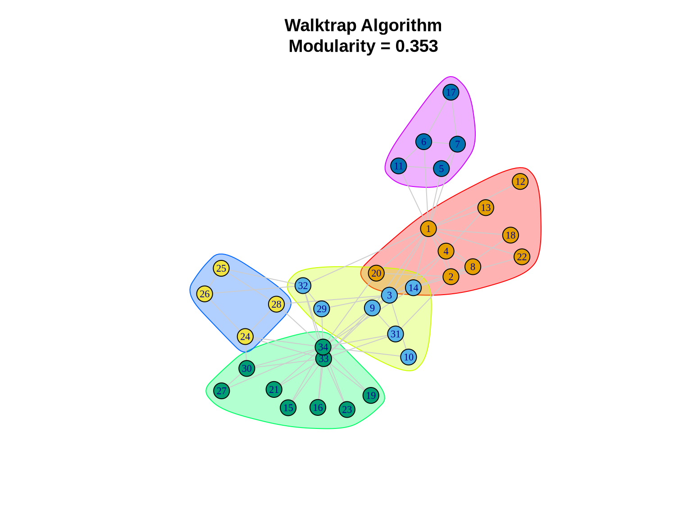
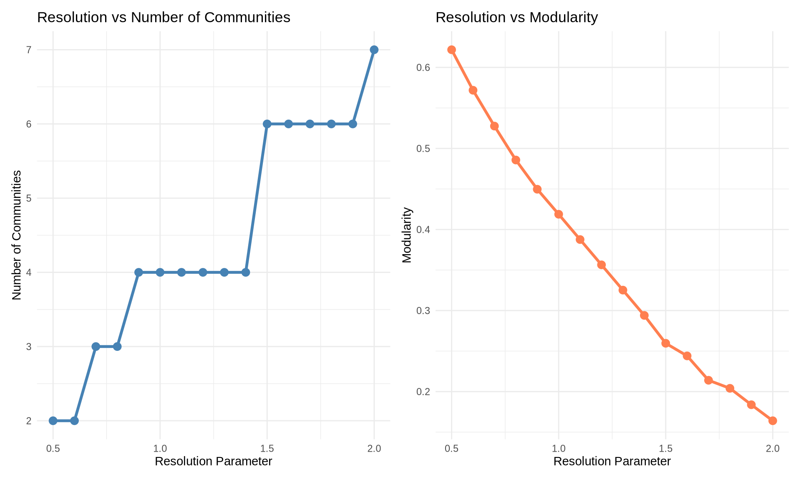
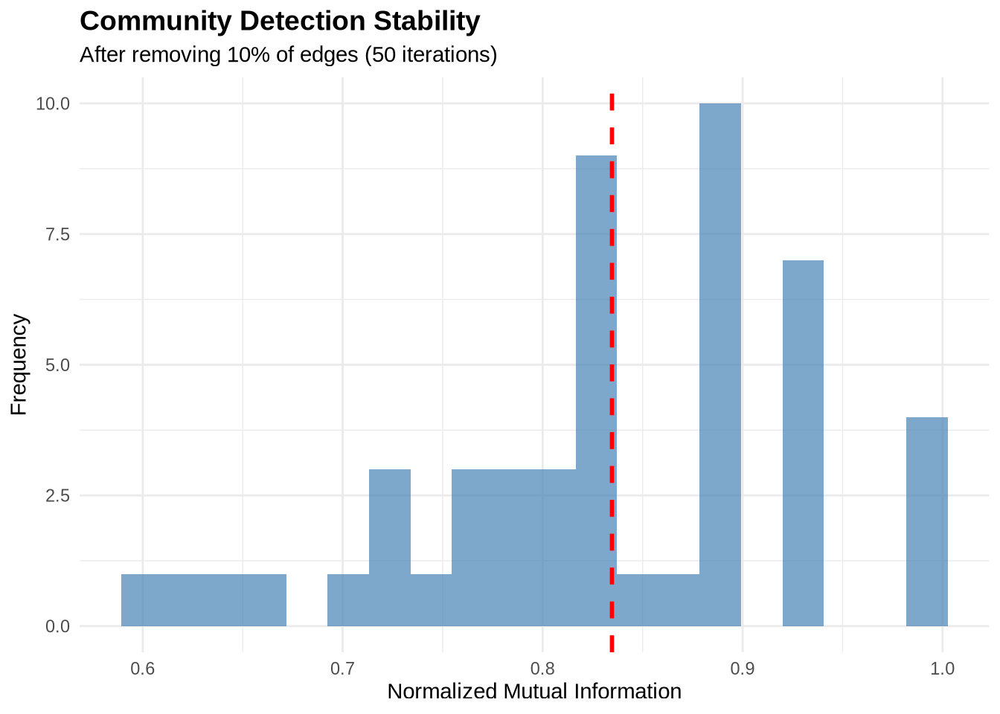

# Load required packages
library(igraph)
library(ggplot2)
library(dplyr)
library(tidyr)
library(patchwork)
# Set seed for reproducibility
set.seed(42)Community Detection in R
Identifying cohesive subgroups in networks
1 Introduction
Community detection is a fundamental technique in network analysis used to identify groups of nodes that are more densely connected to each other than to the rest of the network. In a business context, these “communities” often represent meaningful substructures:
- Organizational Analytics: Identifying informal teams or silos within a company.
- Marketing: Segmenting customers based on purchasing behavior or social influence.
- Fraud Detection: Uncovering rings of colluding actors.
- Supply Chain: Detecting tightly integrated clusters of suppliers.
This tutorial provides a comprehensive guide to detecting and analyzing these cohesive subgroups using R. We will move beyond simple execution to understand the mechanisms behind different algorithms, how to compare their results, and how to validate the stability of the communities found.
1.1 Learning Objectives
By the end of this tutorial, you will be able to:
- Implement five distinct community detection algorithms (Louvain, Edge Betweenness, Walktrap, Spectral, and Fast Greedy).
- Evaluate the quality of partitions using modularity and density metrics.
- Compare results across methods to identify robust community structures.
- Visualize communities effectively to communicate insights.
- Assess the stability of communities to ensure findings are not artifacts of noise.
1.2 Required Packages
2 Loading and Exploring Network Data
2.1 Example 1: Karate Club Network
We will begin with the canonical Zachary’s Karate Club network. This dataset documents the social interactions between 34 members of a university karate club in the 1970s.
Why this dataset? It is the “Hello World” of community detection because the club actually split into two factions during the study due to a conflict between the administrator (John A.) and the instructor (Mr. Hi). This provides us with a “ground truth” to validate our algorithms against—a luxury we rarely have in real-world business data.
# Load the karate club network
karate <- make_graph("Zachary")
# Basic network statistics
cat("Network size:", vcount(karate), "nodes\n")Network size: 34 nodescat("Network edges:", ecount(karate), "edges\n")Network edges: 78 edgescat("Network density:", edge_density(karate), "\n")Network density: 0.1390374 cat("Average clustering:", transitivity(karate, type = "average"), "\n")Average clustering: 0.5879306 2.2 Visualizing the Original Network
# Set layout for consistent visualization
set.seed(42)
layout_karate <- layout_with_fr(karate)
# Plot the network
plot(karate,
layout = layout_karate,
vertex.size = 10,
vertex.label.cex = 0.7,
vertex.color = "lightblue",
vertex.frame.color = "darkblue",
edge.color = "gray80",
main = "Zachary's Karate Club Network")
3 Community Detection Algorithms
3.1 Method 1: Louvain Algorithm
The Louvain algorithm is one of the most popular methods for community detection due to its efficiency and ability to handle large networks (up to millions of nodes).
3.1.1 How it works
It is a hierarchical, greedy algorithm that optimizes modularity (\(Q\)). 1. Local Moving: Each node is moved to the community of its neighbors that yields the largest increase in modularity. 2. Aggregation: A new network is built where nodes are the communities found in step 1. 3. Repeat: Steps 1 and 2 are repeated until no further modularity increase is possible.
Pros: Very fast; good quality partitions. Cons: Can fail to detect small communities in very large networks (resolution limit).
# Detect communities using Louvain
louvain_comm <- cluster_louvain(karate)
# Summary statistics
cat("Number of communities:", length(louvain_comm), "\n")Number of communities: 4 cat("Modularity:", modularity(louvain_comm), "\n")Modularity: 0.4197896 cat("Community sizes:", sizes(louvain_comm), "\n")Community sizes: 11 5 12 6 # Community membership
print(membership(louvain_comm)) [1] 1 1 1 1 2 2 2 1 3 3 2 1 1 1 3 3 2 1 3 1 3 1 3 4 4 4 3 4 4 3 3 4 3 33.1.2 Visualizing Louvain Communities
# Define colors for communities
colors <- c("coral", "lightblue", "lightgreen", "gold", "plum")
plot(louvain_comm, karate,
layout = layout_karate,
vertex.size = 10,
vertex.label.cex = 0.7,
edge.color = "gray80",
main = paste0("Louvain Algorithm\nModularity = ",
round(modularity(louvain_comm), 3)))
3.2 Method 2: Edge Betweenness
The Girvan-Newman (Edge Betweenness) algorithm is a divisive method based on the concept of “bridges” in a network.
3.2.1 How it works
It relies on edge betweenness centrality—the number of shortest paths passing through an edge. Edges connecting different communities act as bottlenecks and have high betweenness. 1. Calculate betweenness for all edges. 2. Remove the edge with the highest betweenness. 3. Recalculate betweenness for remaining edges. 4. Repeat until no edges remain or a target number of communities is reached.
Pros: Intuitively appealing; often very accurate for small networks. Cons: Computationally expensive (\(O(N^3)\)); not suitable for large graphs (>1000 nodes).
# Detect communities using edge betweenness
eb_comm <- cluster_edge_betweenness(karate)
cat("Number of communities:", length(eb_comm), "\n")Number of communities: 5 cat("Modularity:", modularity(eb_comm), "\n")Modularity: 0.4012985 cat("Community sizes:", sizes(eb_comm), "\n")Community sizes: 10 6 5 12 1 3.2.2 Visualizing Edge Betweenness Communities
plot(eb_comm, karate,
layout = layout_karate,
vertex.size = 10,
vertex.label.cex = 0.7,
edge.color = "gray80",
main = paste0("Edge Betweenness Algorithm\nModularity = ",
round(modularity(eb_comm), 3)))
3.3 Method 3: Walktrap
The Walktrap algorithm exploits the tendency of random walks to get “trapped” within densely connected parts of a graph.
3.3.1 How it works
It defines a distance between nodes based on random walks. If two nodes are in the same community, the probability of getting from one to the other in a random walk is high. The algorithm agglomeratively merges nodes/communities that minimize the squared distance between them.
Pros: robust; works well on dense subgraphs. Cons: Slower than Louvain; complexity is approx \(O(N^2 \log N)\).
# Detect communities using walktrap
walktrap_comm <- cluster_walktrap(karate)
cat("Number of communities:", length(walktrap_comm), "\n")Number of communities: 5 cat("Modularity:", modularity(walktrap_comm), "\n")Modularity: 0.3532216 cat("Community sizes:", sizes(walktrap_comm), "\n")Community sizes: 9 7 9 4 5 3.3.2 Visualizing Walktrap Communities
plot(walktrap_comm, karate,
layout = layout_karate,
vertex.size = 10,
vertex.label.cex = 0.7,
edge.color = "gray80",
main = paste0("Walktrap Algorithm\nModularity = ",
round(modularity(walktrap_comm), 3)))
3.4 Method 4: Leading Eigenvector (Spectral)
Spectral clustering methods use the linear algebra properties of the graph to find partitions.
3.4.1 How it works
This specific implementation calculates the leading eigenvector of the modularity matrix. The signs of the elements in this eigenvector can be used to split the network into two communities. This process is repeated recursively to subdivide the network further.
Pros: Theoretically well-grounded; effective for identifying core structures. Cons: Can be slower; sometimes struggles with very small or very disparate community sizes.
# Detect communities using leading eigenvector
spectral_comm <- cluster_leading_eigen(karate)
cat("Number of communities:", length(spectral_comm), "\n")Number of communities: 4 cat("Modularity:", modularity(spectral_comm), "\n")Modularity: 0.3934089 cat("Community sizes:", sizes(spectral_comm), "\n")Community sizes: 7 12 9 6 3.4.2 Visualizing Spectral Communities
plot(spectral_comm, karate,
layout = layout_karate,
vertex.size = 10,
vertex.label.cex = 0.7,
edge.color = "gray80",
main = paste0("Spectral Method\nModularity = ",
round(modularity(spectral_comm), 3)))
3.5 Method 5: Fast Greedy
The Fast Greedy (Clauset-Newman-Moore) algorithm is a hierarchical agglomerative approach designed for speed.
3.5.1 How it works
It starts with every node in its own community. At each step, it merges the pair of communities that results in the largest increase in modularity. It uses sophisticated data structures to do this efficiently.
Pros: Fast; good for large networks. Cons: Greedy nature means it can get stuck in local optima; often produces “mega-communities” by merging smaller ones too early.
# Detect communities using fast greedy
fg_comm <- cluster_fast_greedy(karate)
cat("Number of communities:", length(fg_comm), "\n")Number of communities: 3 cat("Modularity:", modularity(fg_comm), "\n")Modularity: 0.3806706 cat("Community sizes:", sizes(fg_comm), "\n")Community sizes: 8 17 9 4 Comparing Methods
No single algorithm is perfect for every network. The “best” partition often depends on the specific characteristics of your data and your analytical goals. We will compare the methods based on: 1. Modularity: How well separated the communities are. 2. Number of Communities: Granularity of the partition. 3. Agreement: Do different methods find similar structures?
4.1 Summary Comparison Table
# Create comparison data frame
comparison <- data.frame(
Method = c("Louvain", "Edge Betweenness", "Walktrap",
"Spectral", "Fast Greedy"),
Communities = c(length(louvain_comm), length(eb_comm),
length(walktrap_comm), length(spectral_comm),
length(fg_comm)),
Modularity = c(modularity(louvain_comm), modularity(eb_comm),
modularity(walktrap_comm), modularity(spectral_comm),
modularity(fg_comm))
)
# Display table
knitr::kable(comparison,
digits = 4,
caption = "Comparison of Community Detection Methods")| Method | Communities | Modularity |
|---|---|---|
| Louvain | 4 | 0.4198 |
| Edge Betweenness | 5 | 0.4013 |
| Walktrap | 5 | 0.3532 |
| Spectral | 4 | 0.3934 |
| Fast Greedy | 3 | 0.3807 |
4.2 Modularity Comparison Plot
ggplot(comparison, aes(x = reorder(Method, Modularity), y = Modularity)) +
geom_col(fill = "steelblue", alpha = 0.8) +
geom_text(aes(label = round(Modularity, 3)),
vjust = -0.5, size = 4) +
coord_flip() +
labs(title = "Modularity Scores by Community Detection Method",
x = "Method",
y = "Modularity") +
theme_minimal() +
theme(plot.title = element_text(face = "bold", size = 14))
4.3 Agreement Between Methods
Calculate how similar the community assignments are across methods.
# Function to calculate normalized mutual information
calculate_nmi <- function(comm1, comm2) {
compare(comm1, comm2, method = "nmi")
}
# Create agreement matrix
methods_list <- list(
Louvain = louvain_comm,
EdgeBet = eb_comm,
Walktrap = walktrap_comm,
Spectral = spectral_comm,
FastGreedy = fg_comm
)
# Calculate pairwise NMI
nmi_matrix <- matrix(0, nrow = 5, ncol = 5)
rownames(nmi_matrix) <- colnames(nmi_matrix) <- names(methods_list)
for(i in 1:5) {
for(j in 1:5) {
nmi_matrix[i,j] <- calculate_nmi(methods_list[[i]], methods_list[[j]])
}
}
# Display as heatmap
library(reshape2)
nmi_long <- melt(nmi_matrix)
ggplot(nmi_long, aes(x = Var1, y = Var2, fill = value)) +
geom_tile() +
geom_text(aes(label = round(value, 2)), color = "white", size = 4) +
scale_fill_gradient2(low = "blue", mid = "purple", high = "red",
midpoint = 0.5, limit = c(0, 1)) +
labs(title = "Agreement Between Methods (NMI)",
x = "", y = "", fill = "NMI") +
theme_minimal() +
theme(axis.text.x = element_text(angle = 45, hjust = 1),
plot.title = element_text(face = "bold", size = 14))
5 Assessing Community Quality
Modularity is a useful summary statistic, but it’s abstract. To get a concrete sense of community quality, we can look at density.
5.1 Within vs. Between Community Density
A “good” community should have: 1. High internal density: Nodes within the community are tightly connected. 2. Low external density: Few connections exist between different communities.
We can quantify this by calculating the ratio of internal to external density. A high ratio (>10 or >100) indicates very well-defined groups.
# Function to calculate within and between community density
analyze_density <- function(graph, communities) {
membership <- membership(communities)
n_comm <- max(membership)
within_density <- numeric(n_comm)
for(i in 1:n_comm) {
subgraph <- induced_subgraph(graph, which(membership == i))
within_density[i] <- edge_density(subgraph)
}
# Calculate between community density
total_possible <- vcount(graph) * (vcount(graph) - 1) / 2
within_nodes <- sapply(1:n_comm, function(i) sum(membership == i))
within_possible <- sum(within_nodes * (within_nodes - 1) / 2)
between_possible <- total_possible - within_possible
between_edges <- ecount(graph) -
sum(sapply(1:n_comm, function(i) {
ecount(induced_subgraph(graph, which(membership == i)))
}))
between_density <- between_edges / between_possible
list(
within_mean = mean(within_density),
within_sd = sd(within_density),
between = between_density,
ratio = mean(within_density) / between_density
)
}
# Analyze Louvain communities
density_stats <- analyze_density(karate, louvain_comm)
cat("Within-community density (mean):", round(density_stats$within_mean, 3), "\n")Within-community density (mean): 0.451 cat("Between-community density:", round(density_stats$between, 3), "\n")Between-community density: 0.051 cat("Ratio (within/between):", round(density_stats$ratio, 2), "\n")Ratio (within/between): 8.91 5.2 Community Size Distribution
# Create data frame of community sizes for all methods
size_data <- data.frame(
Method = rep(names(methods_list), sapply(methods_list, length)),
Size = unlist(lapply(methods_list, sizes))
)
ggplot(size_data, aes(x = Method, y = Size, fill = Method)) +
geom_boxplot(alpha = 0.7) +
geom_jitter(width = 0.2, alpha = 0.5) +
labs(title = "Community Size Distribution by Method",
x = "Method",
y = "Community Size") +
theme_minimal() +
theme(legend.position = "none",
plot.title = element_text(face = "bold", size = 14))
6 Resolution Parameter Exploration
Most real-world networks have community structure at multiple scales (e.g., teams within departments within divisions).
Algorithms like Louvain allow us to tune a resolution parameter (\(\gamma\)) to explore this hierarchy: * Lower \(\gamma\) (< 1): Favors larger, fewer communities (macro-structure). * Higher \(\gamma\) (> 1): Favors smaller, more numerous communities (micro-structure).
# Sweep resolution parameter
resolutions <- seq(0.5, 2.0, by = 0.1)
results <- data.frame(
resolution = numeric(),
n_communities = numeric(),
modularity = numeric()
)
for(res in resolutions) {
comm <- cluster_louvain(karate, resolution = res)
results <- rbind(results, data.frame(
resolution = res,
n_communities = length(comm),
modularity = modularity(comm)
))
}
# Create plots
p1 <- ggplot(results, aes(x = resolution, y = n_communities)) +
geom_line(color = "steelblue", size = 1.2) +
geom_point(color = "steelblue", size = 3) +
labs(title = "Resolution vs Number of Communities",
x = "Resolution Parameter",
y = "Number of Communities") +
theme_minimal()
p2 <- ggplot(results, aes(x = resolution, y = modularity)) +
geom_line(color = "coral", size = 1.2) +
geom_point(color = "coral", size = 3) +
labs(title = "Resolution vs Modularity",
x = "Resolution Parameter",
y = "Modularity") +
theme_minimal()
p1 + p2
7 Example 2: Larger Network (Random Scale-Free Network)
Let’s apply what we’ve learned to a larger network. We’ll generate a scale-free network using the Barabási-Albert model, which is common in many real-world networks.
# Generate a larger scale-free network
set.seed(42)
large_net <- sample_pa(n = 100, power = 1, m = 2, directed = FALSE)
cat("Network size:", vcount(large_net), "nodes\n")Network size: 100 nodescat("Network edges:", ecount(large_net), "edges\n")Network edges: 197 edgescat("Network density:", round(edge_density(large_net), 4), "\n")Network density: 0.0398 # Apply Louvain
large_comm <- cluster_louvain(large_net)
cat("\nCommunities detected:", length(large_comm), "\n")
Communities detected: 8 cat("Modularity:", round(modularity(large_comm), 3), "\n")Modularity: 0.456 cat("Community sizes:", sizes(large_comm), "\n")Community sizes: 20 10 21 13 9 11 10 6 # Visualize
set.seed(42)
plot(large_comm, large_net,
vertex.size = 6,
vertex.label = NA,
edge.color = "gray90",
main = paste0("Scale-Free Network Communities (n=100)\n",
"Louvain Algorithm, Modularity = ",
round(modularity(large_comm), 3)))
8 Hierarchical Community Structure
Hierarchical algorithms (like Fast Greedy, Edge Betweenness, and Walktrap) produce a dendrogram—a tree diagram showing how nodes are merged into communities step-by-step.
This is valuable for business analysis because it allows you to choose the “cut” that makes the most sense for your problem. For example, do you need 3 broad market segments or 15 niche micro-segments?
# Use fast greedy to get hierarchy
fg_karate <- cluster_fast_greedy(karate)
# Plot dendrogram
plot(as.dendrogram(fg_karate),
main = "Hierarchical Community Structure\nFast Greedy Algorithm",
xlab = "Node",
ylab = "Merge Height")
9 Stability Analysis
In business analytics, robustness is critical. If removing a few random edges (simulating noise or missing data) completely changes your communities, then your findings are unstable and should not be the basis for major strategic decisions.
We can assess stability by perturbing the network and measuring the similarity (NMI) between the original and perturbed communities.
# Function to assess stability
assess_stability <- function(graph, n_iterations = 100,
removal_prop = 0.1) {
original_comm <- cluster_louvain(graph)
original_membership <- membership(original_comm)
similarities <- numeric(n_iterations)
for(i in 1:n_iterations) {
# Remove random edges
edges_to_remove <- sample(ecount(graph),
size = floor(ecount(graph) * removal_prop))
perturbed <- delete_edges(graph, edges_to_remove)
# Detect communities in perturbed network
perturbed_comm <- cluster_louvain(perturbed)
# Calculate similarity
similarities[i] <- compare(original_comm, perturbed_comm,
method = "nmi")
}
similarities
}
# Run stability analysis
stability_scores <- assess_stability(karate, n_iterations = 50)
cat("Mean stability (NMI):", round(mean(stability_scores), 3), "\n")Mean stability (NMI): 0.835 cat("SD stability:", round(sd(stability_scores), 3), "\n")SD stability: 0.097 # Plot
data.frame(NMI = stability_scores) %>%
ggplot(aes(x = NMI)) +
geom_histogram(bins = 20, fill = "steelblue", alpha = 0.7) +
geom_vline(xintercept = mean(stability_scores),
color = "red", linetype = "dashed", size = 1) +
labs(title = "Community Detection Stability",
subtitle = "After removing 10% of edges (50 iterations)",
x = "Normalized Mutual Information",
y = "Frequency") +
theme_minimal() +
theme(plot.title = element_text(face = "bold", size = 14))
10 Key Takeaways
- No “Silver Bullet”: Different algorithms optimize different objective functions. Louvain is a great default for large networks, while Edge Betweenness is excellent for small, precise structural analysis.
- Modularity is a Guide, Not a Rule: High modularity suggests good structure, but beware of the “resolution limit” where small, distinct communities are merged.
- Stability Matters: Always test if your communities hold up to noise. Unstable communities are likely artifacts of the algorithm rather than real features of the data.
- Business Context is King: A mathematically optimal partition might not be the most actionable. Visual inspection and domain knowledge are essential to validate if the communities make sense (e.g., “Do these people actually work together?”).
- Resolution Parameters: Algorithms like Louvain allow you to tune the “resolution” to find smaller or larger communities, which is useful for hierarchical analysis.
11 Exercises
11.1 Exercise 1: Compare Methods on Your Own Data
Load a network dataset of your choice and:
- Apply at least three different community detection methods
- Compare their modularity scores
- Visualize the results
- Assess agreement between methods using NMI
11.2 Exercise 2: Resolution Exploration
Using the Louvain algorithm:
- Sweep the resolution parameter from 0.3 to 2.5
- Create a plot showing how the number of communities changes
- Identify the “elbow point” where adding resolution stops being useful
11.3 Exercise 3: Community Characteristics
For the best community structure you find:
- Calculate within vs. between community density
- Identify which nodes are “bridges” between communities
- Examine node-level attributes (if available) to see if communities correspond to meaningful groups
12 Additional Resources
- igraph documentation: Community detection reference
- Modularity paper: Newman & Girvan (2004), Physical Review E
- Louvain algorithm: Blondel et al. (2008), Journal of Statistical Mechanics
- Comparison of methods: Fortunato (2010), Physics Reports
Next Steps: After mastering community detection, proceed to practice_2.qmd to learn about blockmodeling and role analysis.